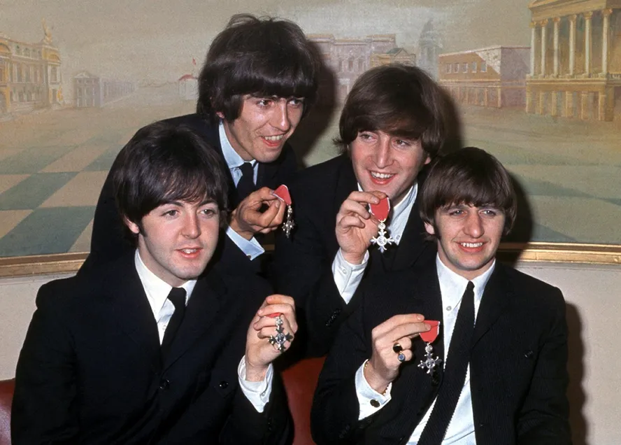
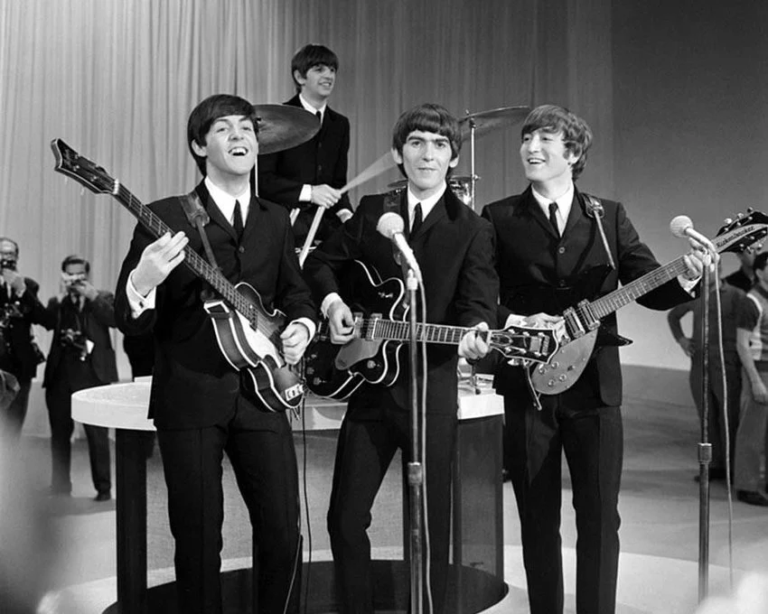

Imortais
O legado dos Beatles





Existem divisores de águas na história da civilização moderna, e há os Beatles. Mais do que vender mais de um bilhão de discos, acumular dezenas de primeiros lugares nas paradas globais ou esgotar estádios antes que o som das guitarras pudesse ser ouvido acima dos gritos da plateia, o verdadeiro legado do quarteto de Liverpool reside em uma mudança sísmica na própria estrutura da percepção humana. Em menos de uma década de atividade conjunta em estúdio — de 1962 a 1970 —, John Lennon, Paul McCartney, George Harrison e Ringo Starr reescreveram as regras da composição, da gravação, da estética visual e do comportamento social, transformando a música pop de um mero entretenimento adolescente em uma forma de alta arte literária e sonora.
O primeiro grande pilar desse legado monumental foi a revolução técnica e conceitual no estúdio. Ao abandonarem as turnês em 1966, os Beatles transformaram a EMI Studios (posteriormente rebatizada de Abbey Road) em um laboratório de alquimia sônica. Trabalhando em simbiose com o produtor George Martin, eles dessacralizaram o equipamento de gravação: utilizaram fitas invertidas, frequências fora do padrão, efeitos de modulação, instrumentos clássicos de orquestra e influências orientais até então inexploradas no Ocidente. Álbuns como Revolver, Sgt. Pepper's Lonely Hearts Club Band e Abbey Road provaram que um disco de vinil poderia ser uma obra coesa, um romance conceitual que se escuta do início ao fim, elevando o padrão de exigência de toda a indústria fonográfica global.
No plano autoral, a parceria criativa entre Lennon e McCartney — complementada pelo surgimento tardio, porém fulminante, de George Harrison como um compositor de sensibilidade ímpar e por momentos marcantes de Ringo Starr — inaugurou o modelo moderno de banda de rock onde os próprios integrantes escrevem e executam seu material. Eles democratizaram a sensibilidade poética, inserindo temas de isolamento existencial, ironia social, espiritualidade e surrealismo em canções que mantinham ganchos melódicos de apelo universal. Essa dualidade entre a acessibilidade pop e a sofisticação de vanguarda garantiu que sua obra resistisse à corrosão do tempo, dialogando tanto com os avós quanto com as gerações que nasceram décadas após o fim do grupo.
Além da revolução puramente sonora, o legado dos Beatles reside na invenção moderna da juventude como um polo autônomo de cultura e influência na sociedade. Antes deles, os jovens eram frequentemente vistos apenas como adultos em estágio de transição; com o quarteto, a adolescência ganhou voz, identidade estética, autonomia financeira e peso político. Eles foram pioneiros ao usar sua plataforma global para questionar dogmas, defender a paz em meio às turbulências da Guerra do Vietnã e influenciar comportamentos que desafiavam diretamente o conservadorismo da época. A transição coletiva que viveram — dos ternos padronizados de empresário aos trajes psicodélicos, barbas e cabelos longos — espelhou de maneira fiel e simbiótica a própria guinada cultural do Ocidente durante a década de 1960.
A prova definitiva de que sua música ultrapassou a barreira do tempo reside na capacidade inesgotável de conversação com o futuro. Mesmo em uma era digital dominada por algoritmos e consumo instantâneo de música fragmentada, os álbuns dos Beatles continuam a quebrar recordes de streaming e a recrutar legiões de fãs que nem sequer eram nascidos quando o grupo se separou. A chegada de tecnologias de restauração de áudio recentes — que permitiram isolar a voz de John Lennon de fitas antigas para lapidar a canção póstuma Now and Then — demonstrou que a fascinação por sua arte permanece viva e tecnologicamente renovada.
Por fim, o legado dos Beatles transcende a música ao definir os contornos da contracultura e da modernidade global. Eles foram os arquitetos da "Invasão Britânica", moldando a moda, a linguagem, a postura diante da autoridade e o ativismo pacifista em uma época de profundas turbulências geopolíticas. Mesmo após a dissolução amarga em 1970 — que deu início a quatro carreiras solo brilhantes e distintas —, o mito coletivo permaneceu inviolável. O fim da banda não encerrou sua história; pelo contrário, consagrou-a como o mito fundador da era contemporânea. Os Beatles provaram que quatro rapazes, armados apenas com melodias e uma coragem criativa inegociável, podiam literalmente remodelar a maneira como o mundo sonha.